Unterkunft
Insect Hunters Town Lodge
In Mindima, Chimbu Province, auf rund 1700 m Höhe — grünes Hochland, frische Bergluft und Ausgangspunkt für Touren zu Kultur und Natur.

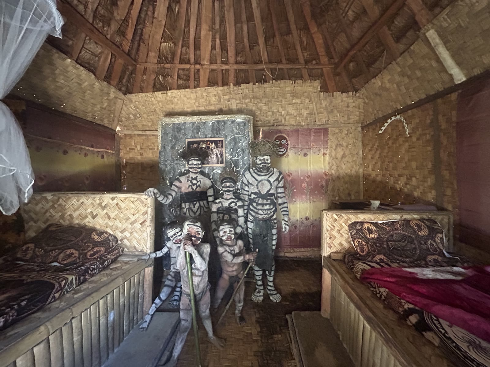
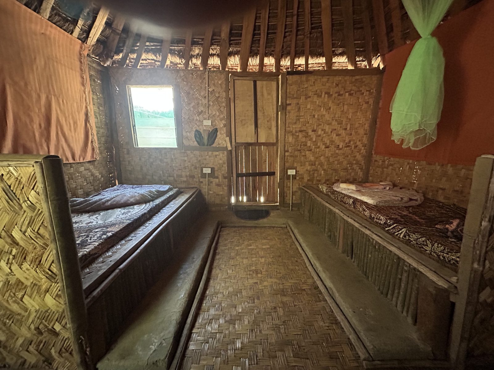
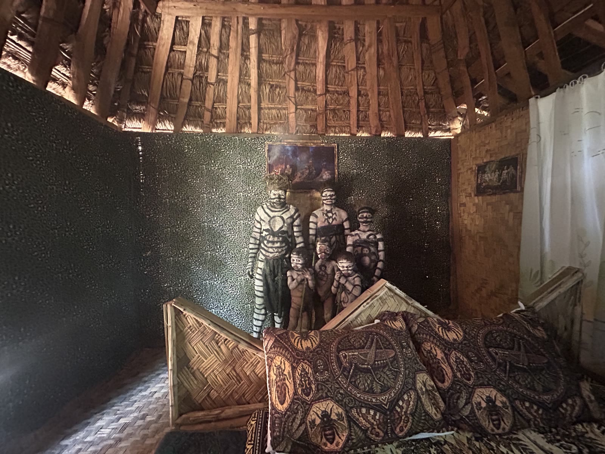
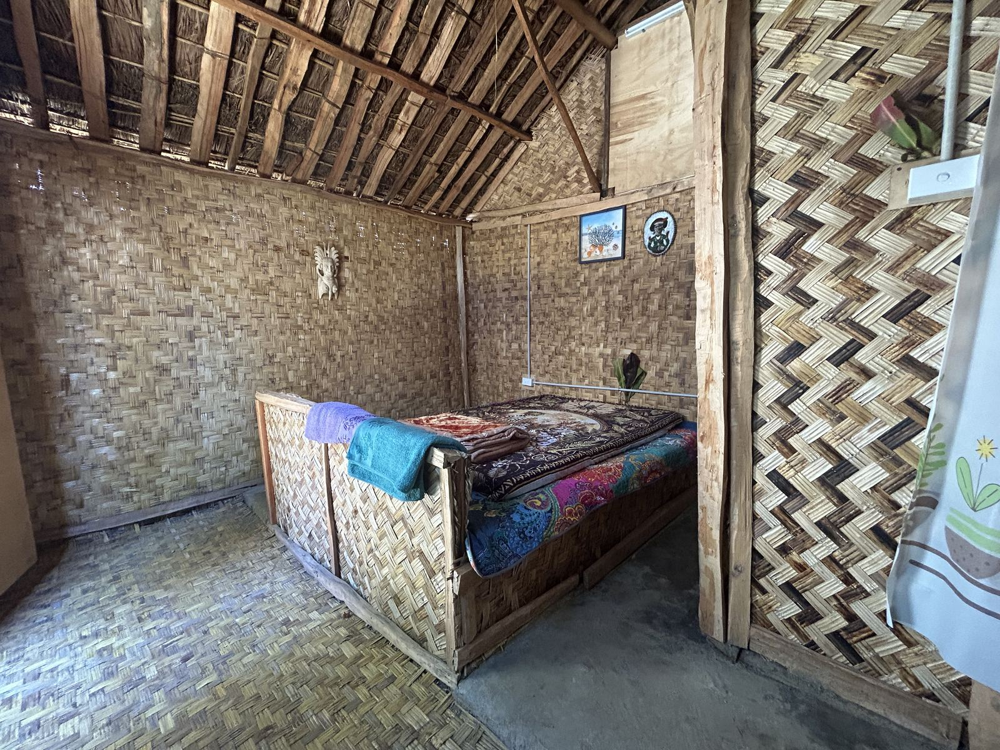
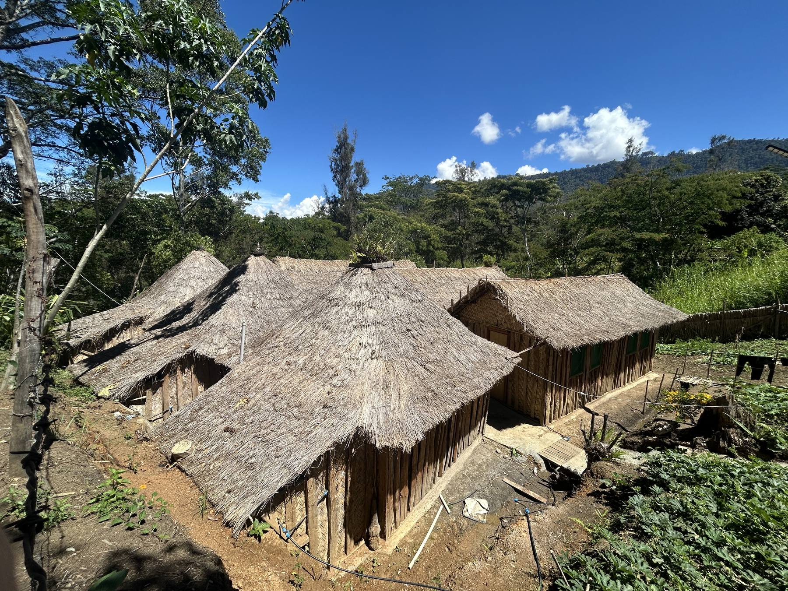
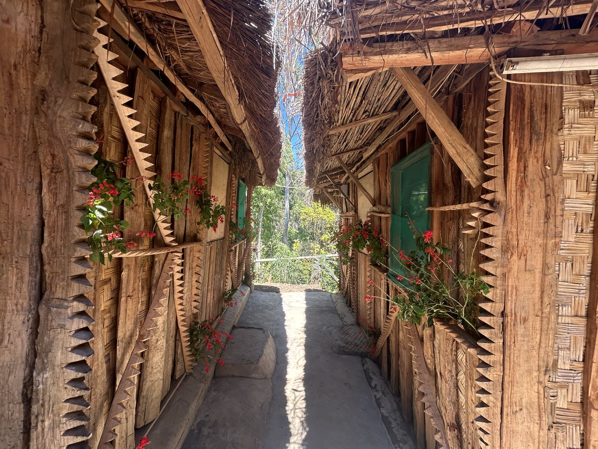
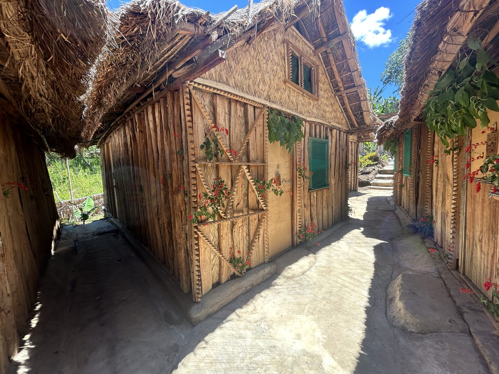
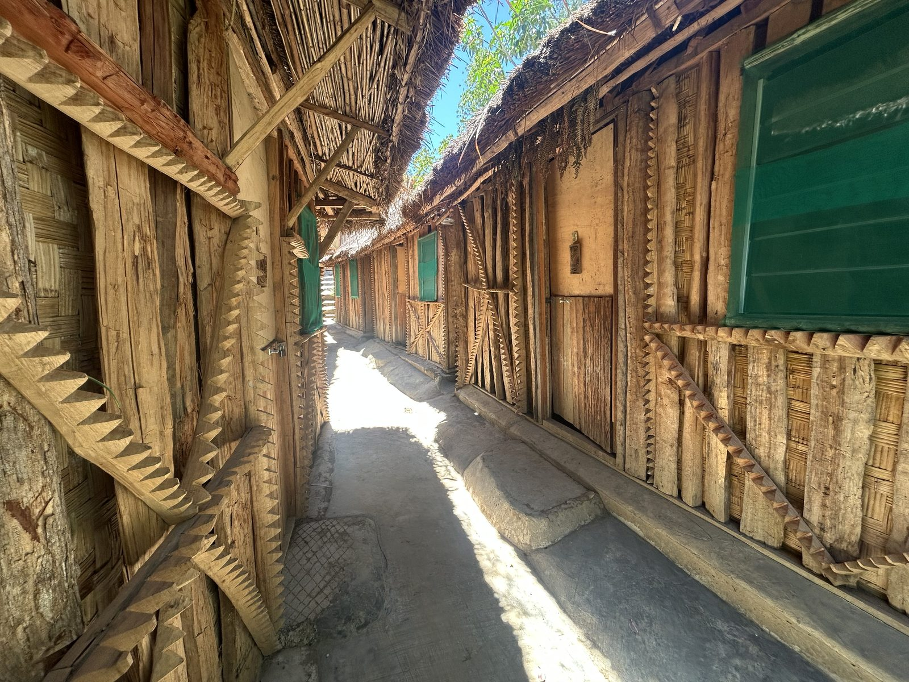
Hochlandlodge in Mindima
Insect Hunters Town liegt in Mindima in der Chimbu Province, eingebettet in eine grüne Hochlandlandschaft auf etwa 1700 Metern. Hier erleben Gäste die frische Bergluft — und nachts die Feuer anderer Stämme auf der Südseite des Tals.
Zur Lodge gehören Zimmer, traditionelle Häuser und ein Restaurant. Die Skeleton Show Grounds erreichen Sie zu Fuß in etwa einer Minute.
Bad & Ausstattung
Eigenes Bad mit Dusche und WC
Jedes Zimmer hat ein eigenes Bad — Dusche und Toilette in traditioneller Bauweise mit gewebten Bambuswänden.
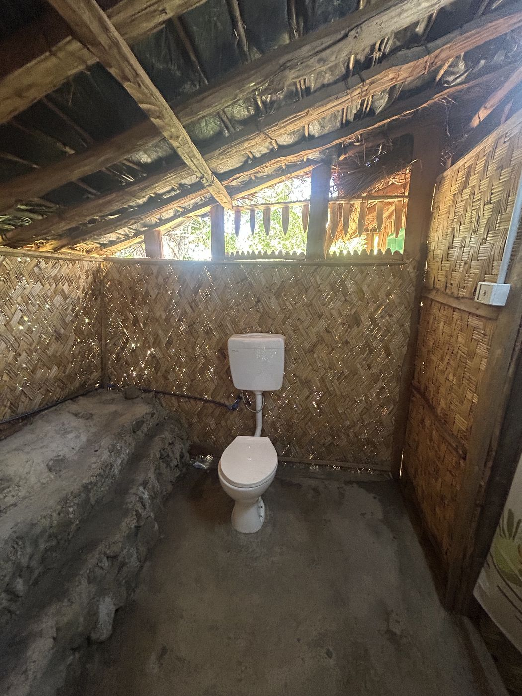
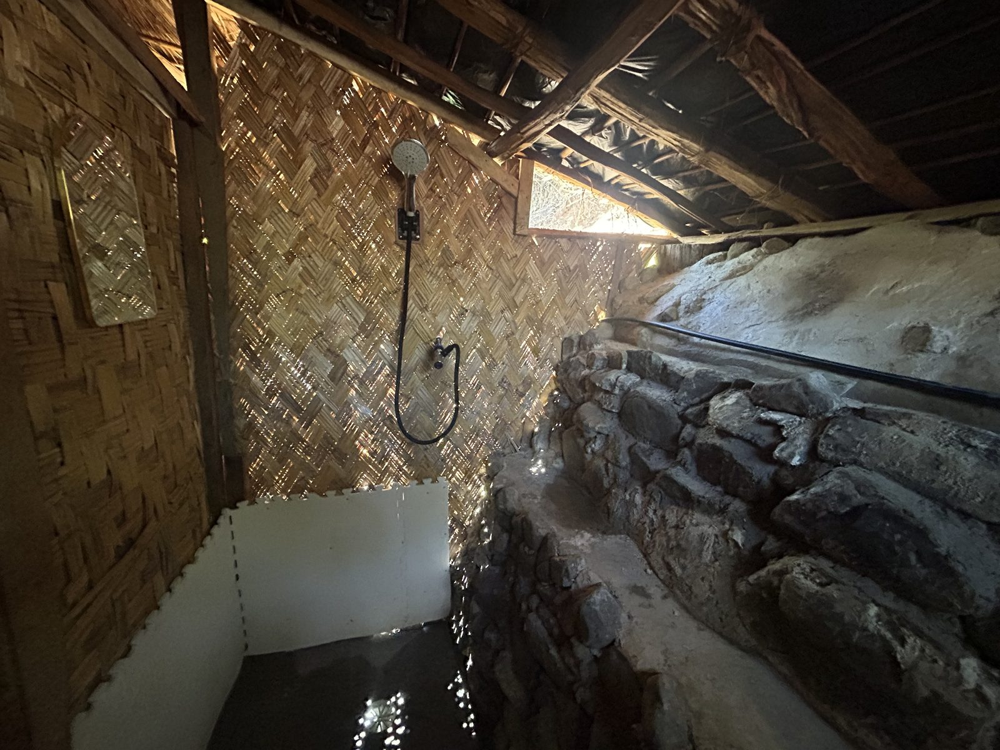
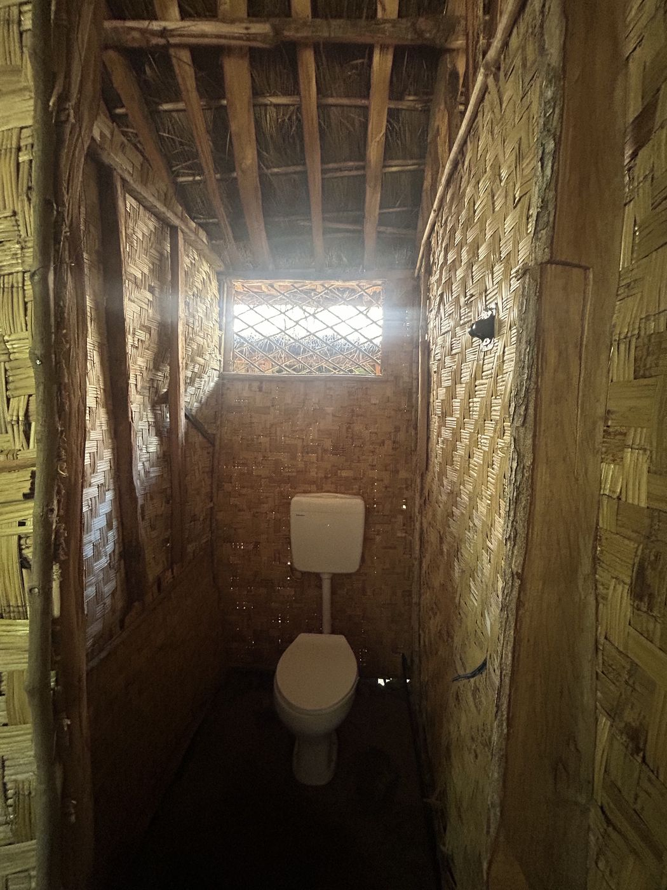
Ort & Menschen
Gastgebergemeinschaft und Nachbarn
Gastgeber ist die Gemeinschaft der Omo Burglagamo — sehr gastfreundliche Menschen. In der unmittelbaren Umgebung leben rund 24 Stämme. Darunter sind auch wenig bekannte „hidden tribes“ mit eigenen Geschichten und Trachten.
Die Region lebt vor allem von der Landwirtschaft, besonders vom Kaffeeanbau, und ist stark vom Tourismus abhängig. Handwerk aus lokalen Materialien entsteht vor Ort — Gäste können zusehen, wie es gemacht wird.
Lokal verwurzelt
100 % lokal geführt
Insect Hunters Town wird vollständig vor Ort betrieben. Das Geld bleibt bei den lokalen Gemeinschaften und kommt ihnen zugute. Gäste erleben den Alltag in einer abgelegenen Hochlandregion — nah an Kultur, Handwerk und Landschaft.
Touren ab der Lodge
Viele Programme starten und enden in Insect Hunters Town. Sehen Sie sich die Tages- und Mehrtagespakete an — jedes Programm ist auf Anfrage anpassbar.